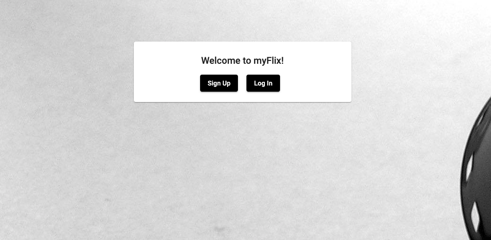
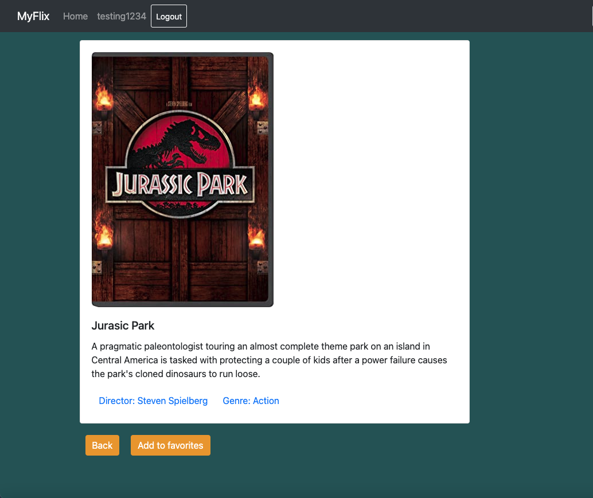

MyFlix Angular Case Study
OVERVIEW
In this project, I took my myFlix API and created a new myFlix app using Angular. Users will be able to register for an account, log in and see a list of 10 different movies. The movies displayed include a synopsis, a brief biography of the director, and a brief definition of the movies genre. Users can then add movies to their Favorite List where they can view them all on their Profile Page. I was responsible for the frontend development of this project and used Angular Material to create the User Interface.
PURPOSE AND CONTEXT
myFlix was a project that I built as a part of my web development course at CareerFoundry to demonstrate my mastery of full-stack JavaScript Development.
OBJECTIVE
In this project, I aimed to create a database and a REST API that would later be implemented in my client facing myFlix web application.
PROJECT DURATION
Three months
TOOLS USED
- MEAN stack: MongoDB, Express, Angular and Node.js
APPROACH AND PROCESS

CLIENT-SIDE
This was the first step in my process to create an entire web app from scratch. When I began to learn about API’s, it was clear that Representational State Transfer (REST) was the best pattern of architecture to use because it employs HTTP by using endpoints to identify the resources on the web server the client wants to access. To test all of my endpoints, I used Postman.
It was ultimately decided that using a NoSQL database like MongoDB would be the best option because of the flexibility it offers. However, I chose to use the dependency Mongoose to ensure more uniformity in the data. These two decisions allow the data to be altered in the future if that was decided to be best for the app.
The final decision to be made involved authorization and authentication. In my course at CareerFoundry, I was given information about several different methods for authentication. In addition to choosing to use HTTP authentication, I learned that JWT (Token-Based) Authentication was favorable because of its speed, security and less strain on the server side.
SERVER-SIDE
After completing the database and API, I built the interface for the client-side view of this app. myFlix is a single-page application that uses React and React-Redux to build several views and uses Routing to navigate between the different views. Separating these views into different files allowed me to keep my code readable and easier to maintain. This app utilizes Bootstrap for creating the design interface. I enjoyed the creative license that we had in this project. Getting to make the design decisions ended up being an extremely rewarding part of this project.
CHALLENGES
Throughout this project, I faced many challenges. I struggled the most with debugging in React. When using dev tools to inspect my code for errors, not getting a clear idea where the problem lied made for many hours spent trying to discover the issues. WIth the help of my tutor and mentor, I was given advice on how to debug in those tough situations. I ran into several other minor challenges including issues with images working and navigating working with Bootstrap for the first time.
END RESULTS
Overall I learned a great deal about the MERN stack and how to create a visually appealing web application. I had the most difficulty with the client-side portion of this application but with the great guidance from my tutor and mentor I ended up with an abundance of new knowledge.
CREDITS
- Role: Lead Developer
- Tutor: Ezequiel De Simone
- Mentor: Alfredo Salazar Vélez
Testing Demo
*Click here to check out the demo*Use log in credentials:
Username: testing1234
Password: testing1234